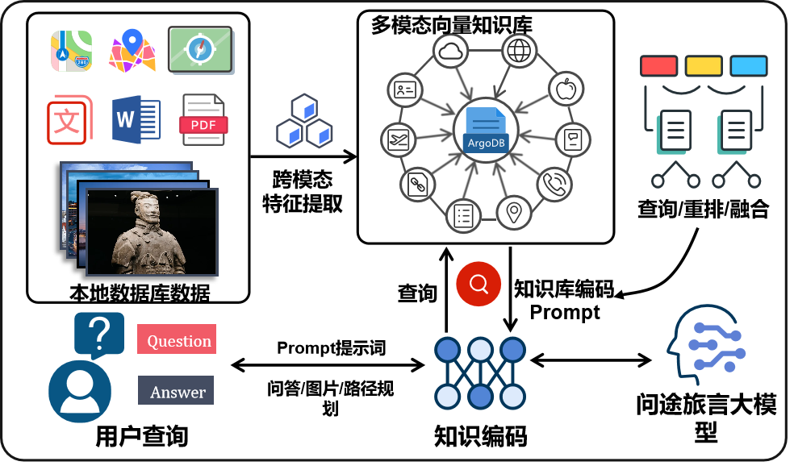

Introduction
As large language models continue to evolve, generative AI models are emerging as key drivers of a new wave of technological revolution and industrial transformation. AIGC (AI-Generated Content) technologies are constantly challenging and reshaping the development models, system architectures, and operational rules of human society, while simultaneously raising the bar for supporting industries. Large language models are generally categorized into two types: general-purpose models and vertical models. General-purpose models often struggle with acquiring domain-specific knowledge, have limited generalization capabilities, and fall short in meeting the specialized requirements of specific industries. In contrast, vertical models are fine-tuned and trained within specific domains, excelling in domain-specific knowledge and question-answering, thereby addressing the limitations of general-purpose models with a focus on specialized expertise.

Although vertical large language models have seen successful applications in fields such as education, finance, and law, their adoption in the tourism industry has been relatively slow. The development of a large language model tailored to the tourism sector holds significant technical and societal value. Both academic and commercial applications urgently require a vertical model to fill this gap. In response to the current lack of such models in the tourism industry, this project introduces LLM-TourGuider, a large language model specifically designed for the tourism sector.
The key features of the project are as followed:
- Intelligent Q&A Service: The LLM-TourGuider model provides comprehensive consultation services in areas such as attraction recommendations, cultural background introductions, and local customs interpretation. This feature addresses the problem of information overload in the tourism industry, offering a solution to enhance the quality and efficiency of tourism information services.
- Personalized Travel Planning: The project allows users to input their personal preferences and, based on specific needs (such as family trips, traveling with pets, or interest in historical culture) and budget, it can plan tailored, complete travel itineraries. This personalized approach ensures that each user receives a travel plan that suits their unique requirements.
- Real-Time Professional Information Support: Through a combination of a knowledge base and internet access, the model can retrieve real-time information on traffic congestion, weather, and more. This information is integrated as pre-existing knowledge in the model's output, enabling the generation of results that are more aligned with the user's current environment. This significantly enhances the continuity and convenience of the travel experience.
Detailed Information
TravelMate AI is an advanced large language model (LLM) tailored specifically for the tourism sector. This model is designed to provide comprehensive information services, including sightseeing recommendations, cultural insights, local customs interpretation, and personalized travel itinerary planning. The model's architecture is divided into several key modules, each playing a critical role in delivering a seamless and intelligent user experience.
1. Data Collection Module: At the heart of any LLM is the data it is trained on. For TravelMate AI, we established a comprehensive corpus by aggregating a vast amount of textual data related to the city of Xi'an. The data was sourced from a variety of platforms, including general websites (e.g., Baidu, Zhihu) and specialized tourism websites (e.g., China National Geographic, TripAdvisor). Using a combination of web scraping tools like Requests, Selenium, and Beautiful Soup, we gathered over 600,000 entries encompassing historical data, cultural context, popular landmarks, and local delicacies. This diverse dataset ensures that the model can respond to a wide range of user queries with rich, relevant information.

1. Data Collection Module: At the heart of any LLM is the data it is trained on. For TravelMate AI, we established a comprehensive corpus by aggregating a vast amount of textual data related to the city of Xi'an. The data was sourced from a variety of platforms, including general websites (e.g., Baidu, Zhihu) and specialized tourism websites (e.g., China National Geographic, TripAdvisor). Using a combination of web scraping tools like Requests, Selenium, and Beautiful Soup, we gathered over 600,000 entries encompassing historical data, cultural context, popular landmarks, and local delicacies. This diverse dataset ensures that the model can respond to a wide range of user queries with rich, relevant information.
2. Data Preprocessing and Format Matching Module: Raw data cannot be used directly for training the model. The preprocessing stage involves cleaning the data by removing noise, duplicates, and irrelevant content. Techniques such as noise reduction, stop-word removal, and format normalization were employed to ensure high-quality inputs. The next step involved converting this cleaned data into a multi-turn dialogue format, essential for training a conversational AI model. We used an iterative dialogue generation method with two independently running ChatGPT Turbo APIs. One API simulated user queries, while the other provided AI responses, creating realistic and contextually rich conversation data. This setup allowed us to train the model to maintain context across multiple turns, a critical feature for providing coherent and helpful travel advice.
3. Model Selection and Fine-Tuning Module: Given the constraints of computational resources, we opted to fine-tune an existing open-source Chinese LLM, LLaMA-Chat-7B. The model was selected for its balance between performance and efficiency, making it suitable for deployment in resource-limited environments.
Fine-tuning involved two approaches:
- Full-parameter fine-tuning: Used where high computational power is available, enabling the model to achieve maximum performance.
- Parameter-efficient fine-tuning (LoRA): Employed in scenarios with limited computational resources, this method maintains performance while significantly reducing the computational overhead.
The fine-tuning process was tailored to the tourism domain, ensuring that the model could effectively handle specific tasks like route planning, cultural interpretation, and real-time travel advisory.
4. Frontend and Backend Integration Module: The frontend interface was designed using the Vue framework, ensuring a user-friendly and responsive interaction layer. The backend, powered by Spring Boot, handles the communication between the user interface and the model. It processes user inputs, forwards them to the model for inference, and then relays the model's responses back to the user. Additionally, the system integrates APIs for maps and weather to provide real-time updates and enhance the travel planning experience.
5. Scalability and Deployment Module: TravelMate AI was built with scalability in mind. The system's architecture supports distributed training and inference, leveraging distributed storage and computing resources to manage the high memory and processing demands of LLMs. This design ensures that the model can be scaled up as needed, whether for increased user demand or for expanding the model's capabilities.
Project Achievements

1. Development of a Tourism-Specific Large Language Model: The primary achievement of TravelMate AI lies in the creation of a large language model that is fine-tuned for the tourism domain. Unlike general-purpose LLMs, which often lack the specificity required for industry-specific tasks, TravelMate AI has been meticulously trained on a custom-built dataset comprising over 600,000 entries related to the city of Xi'an. This dataset was curated from a wide range of sources, including general websites like Baidu and Zhihu, as well as specialized tourism platforms such as China National Geographic and TripAdvisor.
2. Intelligent Multi-Round Dialogue System: TravelMate AI excels in multi-round dialogue, allowing it to engage users in natural, context-aware conversations. The model can track dialogue history and current context across multiple interactions, enabling it to better understand user needs and provide personalized responses. This capability is particularly beneficial for offering customized travel itineraries, cultural insights, and real-time updates on weather and traffic conditions.
3. Efficient Model Fine-Tuning Techniques: Recognizing the computational demands of fine-tuning large models, the project implemented both full-parameter fine-tuning and parameter-efficient fine-tuning techniques, such as LoRA (Low-Rank Adaptation). These approaches ensure that the model can be deployed effectively even in resource-constrained environments, making it more accessible for a wide range of applications within the tourism industry.
4. Semi-Automated Data Collection and Annotation: To overcome the challenge of creating a high-quality, tourism-specific dataset, the project introduced a semi-automated data collection and annotation process. This method leverages existing language models, like ChatGPT, to convert raw text data into multi-round dialogue formats, significantly reducing the time and cost associated with manual data annotation. Additionally, the model's performance is enhanced through a natural language feedback mechanism, allowing it to iteratively improve the quality of the generated dialogues.
5. Integration of Frontend and Backend Systems: The project successfully integrated the TravelMate AI model with a user-friendly frontend interface, developed using the Vue framework, and a robust backend powered by Spring Boot. This integration ensures seamless communication between users and the model, allowing for real-time interaction and responsive information delivery. The system also incorporates API connections for maps and weather updates, further enhancing the travel planning experience.
6. Application Prospects and Future Potential: TravelMate AI not only addresses the current gaps in tourism information services but also paves the way for future innovations in the industry. Its ability to deliver personalized, real-time information makes it a valuable tool for travelers, while its scalable architecture and efficient training methods ensure that it can be adapted to other cities and tourism contexts. The project demonstrates the potential of LLMs to revolutionize tourism by providing intelligent, context-aware services that enhance the overall travel experience.